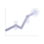

<!-- @dsCard group="Marketing" viewport="1280x820" -->
<!-- @startingPoint section="Marketing" subtitle="SPINX-style dark landing page for Web Trace" viewport="1280x900" -->
<!DOCTYPE html>
<html lang="en">
<head>
<meta charset="utf-8">
<meta name="viewport" content="width=device-width, initial-scale=1">
<title>Web Trace — Portfolio Management</title>
<link rel="stylesheet" href="../../styles.css">
<style>
  body { margin: 0; background: var(--surface-page); overflow-x: hidden; }
  .wrap { max-width: var(--container-wide); margin: 0 auto; padding: 0 32px; }
  nav.top { position: sticky; top: 0; z-index: 50; background: rgba(22,22,25,0.82); backdrop-filter: blur(14px); border-bottom: 1px solid var(--border-subtle); }
  .navrow { display: flex; align-items: center; justify-content: space-between; height: 64px; }
  .navlinks { display: flex; gap: 28px; }
  .navlinks a { color: var(--text-muted); font-size: 13px; font-weight: 500; letter-spacing: 0.01em; }
  .navlinks a:hover { color: var(--text-primary); }
  .brandlk { display: flex; align-items: baseline; gap: 2px; }
  .brandlk .w { font-family: var(--font-display); font-weight: 700; font-size: 19px; color: var(--text-primary); letter-spacing: -0.01em; }
  .brandlk .t { font-family: var(--font-brand); font-size: 19px; }
  .hero { position: relative; padding: 96px 0 84px; }
  .hero-bg { position: absolute; inset: 0; z-index: 0; background:
    radial-gradient(900px 460px at 18% -8%, rgba(138,160,230,0.18), transparent 60%),
    radial-gradient(720px 420px at 92% 8%, rgba(180,180,204,0.12), transparent 60%); pointer-events: none; }
  .hero .wrap { position: relative; z-index: 1; }
  h1.head { font-family: var(--font-display); font-weight: 700; font-size: clamp(48px, 7vw, 92px); line-height: 0.98; letter-spacing: -0.035em; margin: 18px 0 0; max-width: 16ch; }
  .sub { margin: 26px 0 0; max-width: 52ch; font-size: 18px; line-height: 1.6; color: var(--text-secondary); }
  .ctas { display: flex; gap: 14px; margin-top: 34px; flex-wrap: wrap; }
  .strip { border-top: 1px solid var(--border-subtle); border-bottom: 1px solid var(--border-subtle); padding: 22px 0; }
  .striprow { display: flex; align-items: center; gap: 38px; flex-wrap: wrap; justify-content: center; opacity: 0.7; }
  .striprow span { font-family: var(--font-mono); font-size: 13px; letter-spacing: 0.12em; color: var(--text-muted); text-transform: uppercase; }
  section.block { padding: var(--section-pad-y) 0; }
  .sec-eyebrow { margin-bottom: 16px; }
  h2.sec { font-family: var(--font-display); font-weight: 700; font-size: clamp(30px, 4vw, 46px); letter-spacing: -0.025em; line-height: 1.08; max-width: 18ch; }
  .features { display: grid; grid-template-columns: repeat(3, 1fr); gap: 18px; margin-top: 44px; }
  .feat { padding: 26px; border-radius: var(--radius-lg); border: 1px solid var(--border-default); background: var(--surface-card); }
  .feat .ic { width: 40px; height: 40px; border-radius: var(--radius-md); display: flex; align-items: center; justify-content: center; background: var(--accent-muted); color: var(--accent-text); margin-bottom: 16px; }
  .feat h3 { font-size: 17px; font-weight: 600; line-height: 1.3; margin: 0 0 8px; color: var(--text-primary); }
  .feat p { margin: 0; font-size: 13.5px; line-height: 1.6; color: var(--text-muted); }
  .statband { border-radius: var(--radius-xl); border: 1px solid var(--border-default); background: linear-gradient(180deg, var(--surface-card), var(--surface-sunken)); padding: 44px; display: grid; grid-template-columns: repeat(4, 1fr); gap: 16px; }
  .bignum { font-family: var(--font-brand); font-size: 52px; line-height: 1; color: var(--text-primary); }
  .bignum.up { color: var(--up-text); }
  .statlbl { font-size: 12px; color: var(--text-muted); margin-top: 12px; letter-spacing: 0.04em; }
  .cta-final { text-align: center; padding: 100px 0; }
  .cta-final h2 { margin: 0 auto; }
  footer { border-top: 1px solid var(--border-subtle); padding: 40px 0; }
  .footrow { display: flex; align-items: center; justify-content: space-between; flex-wrap: wrap; gap: 16px; }
  .footrow .muted { font-family: var(--font-mono); font-size: 11.5px; color: var(--text-faint); }
  [data-lucide] { stroke-width: 1.8; }
</style>
</head>
<body>
  <div id="ph"></div>
  <script src="https://unpkg.com/react@18.3.1/umd/react.development.js" integrity="sha384-hD6/rw4ppMLGNu3tX5cjIb+uRZ7UkRJ6BPkLpg4hAu/6onKUg4lLsHAs9EBPT82L" crossorigin="anonymous"></script>
  <script src="https://unpkg.com/react-dom@18.3.1/umd/react-dom.development.js" integrity="sha384-u6aeetuaXnQ38mYT8rp6sbXaQe3NL9t+IBXmnYxwkUI2Hw4bsp2Wvmx4yRQF1uAm" crossorigin="anonymous"></script>
  <script src="https://unpkg.com/@babel/standalone@7.29.0/babel.min.js" integrity="sha384-m08KidiNqLdpJqLq95G/LEi8Qvjl/xUYll3QILypMoQ65QorJ9Lvtp2RXYGBFj1y" crossorigin="anonymous"></script>
  <script src="https://unpkg.com/lucide@0.460.0/dist/umd/lucide.min.js"></script>
  <script src="../../_ds_bundle.js"></script>
  <script type="text/babel">
    const { Button, Badge, StatusPill } = window.WebTracePortfolioManagementDesignSystem_29ffdf;
    const Ico = ({ n, s }) => <i data-lucide={n} style={{ width: s||18, height: s||18, display:'inline-flex' }} />;

    function Landing() {
      React.useEffect(() => { window.lucide && window.lucide.createIcons(); });
      const feats = [
        { ic: 'radar', h: 'Real-time signal scanner', p: 'A real-time engine surfaces only data-backed 0DTE and multi-day setups — no mocks, no synthetic fills, ever.' },
        { ic: 'git-fork', h: 'Confluence gates', p: 'Every signal passes documented gates — volume, VWAP, structure, FVG, HTF bias — shown plainly on each card.' },
        { ic: 'line-chart', h: 'Live execution map', p: 'Entry, stop, and target as real price levels, plotted live against the underlying with a locked outcome.' },
        { ic: 'newspaper', h: 'NLP news engine', p: 'Headlines scored for sentiment and impact, mapped to the tickers that actually move on them.' },
        { ic: 'shield-check', h: 'Honest by design', p: 'If the data is not real, the field is empty. Confidence is computed from signal strength — never inflated.' },
        { ic: 'gauge', h: 'Backtested edge', p: 'The ICT V4.1 strategy is published with its win rate, profit factor, and drawdown — nothing hidden.' },
      ];
      return (
        <div>
          <nav className="top"><div className="wrap navrow">
            <div style={{ display:'flex', alignItems:'center', gap:11 }}>
              
              <span className="brandlk"><span className="w">Web</span><span className="t wt-gradient-text">&nbsp;Trace</span></span>
            </div>
            <div className="navlinks">
              <a href="#">Product</a><a href="#">Strategy</a><a href="#">Performance</a><a href="#">Pricing</a>
            </div>
            <div style={{ display:'flex', gap:10, alignItems:'center' }}>
              <Button variant="ghost" size="sm">Sign in</Button>
              <Button variant="primary" size="sm">Open the desk</Button>
            </div>
          </div></nav>

          <header className="hero">
            <div className="hero-bg" />
            <div className="wrap">
              <div className="wt-eyebrow sec-eyebrow">Portfolio Management · Powered by AI</div>
              <h1 className="head"><span className="wt-gradient-text">Tracing</span> the market's edge</h1>
              <p className="sub">A reliable, instrument-grade desk that surfaces real options intelligence — credible setups, live execution levels, and an honest, backtested edge.</p>
              <div className="ctas">
                <Button variant="primary" size="lg" rightIcon={<Ico n="arrow-right" s={18} />}>Open the desk</Button>
                <Button variant="secondary" size="lg" leftIcon={<Ico n="play" s={16} />}>Watch a session</Button>
              </div>
            </div>
          </header>

          <div className="strip"><div className="wrap striprow">
            <span>0DTE</span><span>ICT V4.1</span><span>yfinance live</span><span>No mock data</span><span>ET-aligned</span>
          </div></div>

          <section className="block"><div className="wrap">
            <div className="wt-eyebrow sec-eyebrow">What it does</div>
            <h2 className="sec">Everything a disciplined options desk needs — and nothing it doesn't</h2>
            <div className="features">
              {feats.map((f,i)=>(
                <div className="feat" key={i}>
                  <div className="ic"><Ico n={f.ic} s={20} /></div>
                  <h3>{f.h}</h3><p>{f.p}</p>
                </div>
              ))}
            </div>
          </div></section>

          <section className="block" style={{ paddingTop: 0 }}><div className="wrap">
            <div className="statband">
              <div><div className="bignum up">75%</div><div className="statlbl">ICT V4.1 win rate (backtested)</div></div>
              <div><div className="bignum">9.3×</div><div className="statlbl">Profit factor</div></div>
              <div><div className="bignum">3+</div><div className="statlbl">Credible setups per session</div></div>
              <div><div className="bignum">0</div><div className="statlbl">Synthetic data points</div></div>
            </div>
          </div></section>

          <section className="cta-final"><div className="wrap">
            <div className="wt-eyebrow sec-eyebrow" style={{ textAlign:'center' }}>Ready when the bell rings</div>
            <h2 className="sec" style={{ textAlign:'center', maxWidth:'20ch' }}>Trace your next setup with <span className="wt-gradient-text">Web&nbsp;Trace</span></h2>
            <div className="ctas" style={{ justifyContent:'center', marginTop:30 }}>
              <Button variant="primary" size="lg" rightIcon={<Ico n="arrow-right" s={18} />}>Open the desk</Button>
            </div>
          </div></section>

          <footer><div className="wrap footrow">
            <div style={{ display:'flex', alignItems:'center', gap:10 }}>
              
              <span className="brandlk"><span className="w" style={{ fontSize:16 }}>Web</span><span className="t wt-gradient-text" style={{ fontSize:16 }}>&nbsp;Trace</span></span>
            </div>
            <span className="muted">© 2026 Web Trace Portfolio Management · Built by Will Kizer · For educational use — not financial advice</span>
          </div></footer>
        </div>
      );
    }
    ReactDOM.createRoot(document.getElementById('ph')).render(<Landing />);
  </script>
</body>
</html>
